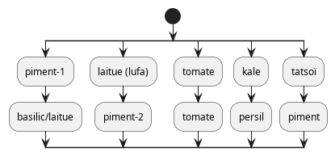

Plan de culture

Rappels
À faire
Conserver les bases des lecteurs dans une solution neutre ou légèrement alcaline (KCl(3M)).
À faire
Renouveler alimentation (solution nutritive) régulièrement (conjointement avec remplacement de l’eau).
À faire
Vérifier le Ph de la soupe aux 3 jours ; dans les conditions actuelles ajouter 1 ml de Ph- aux 4 jours.
À faire
Remplacer 10-15 litres eau aux 2-3 semaines et ajuster nutriments et Ph.
…